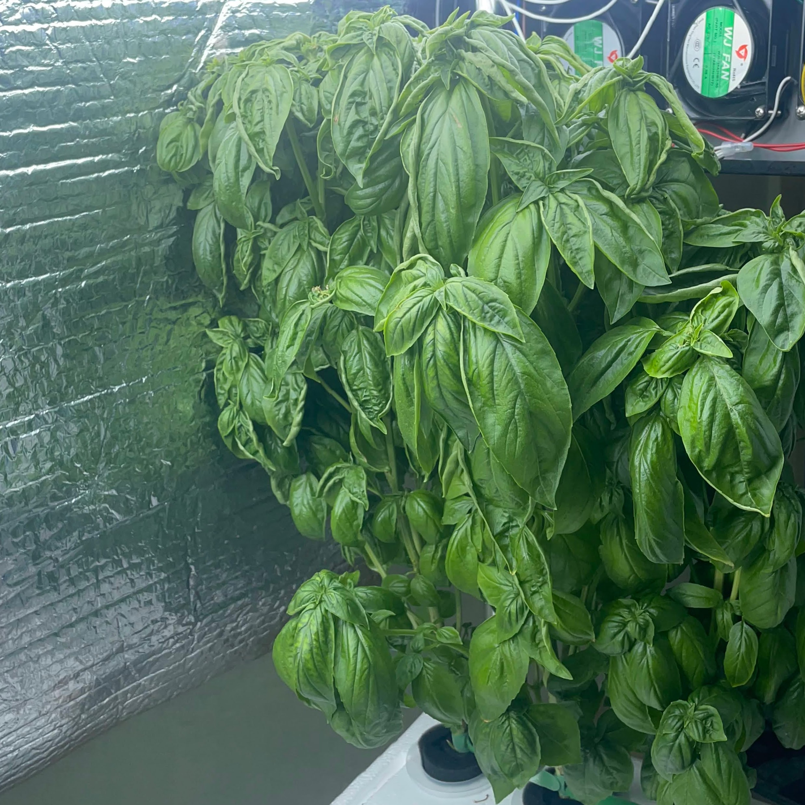
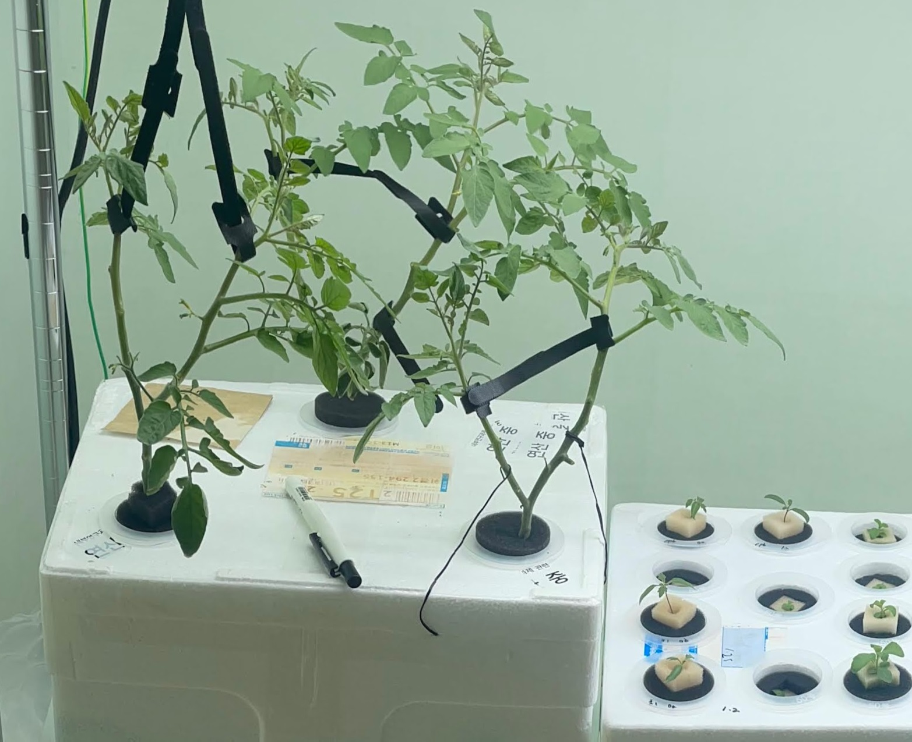
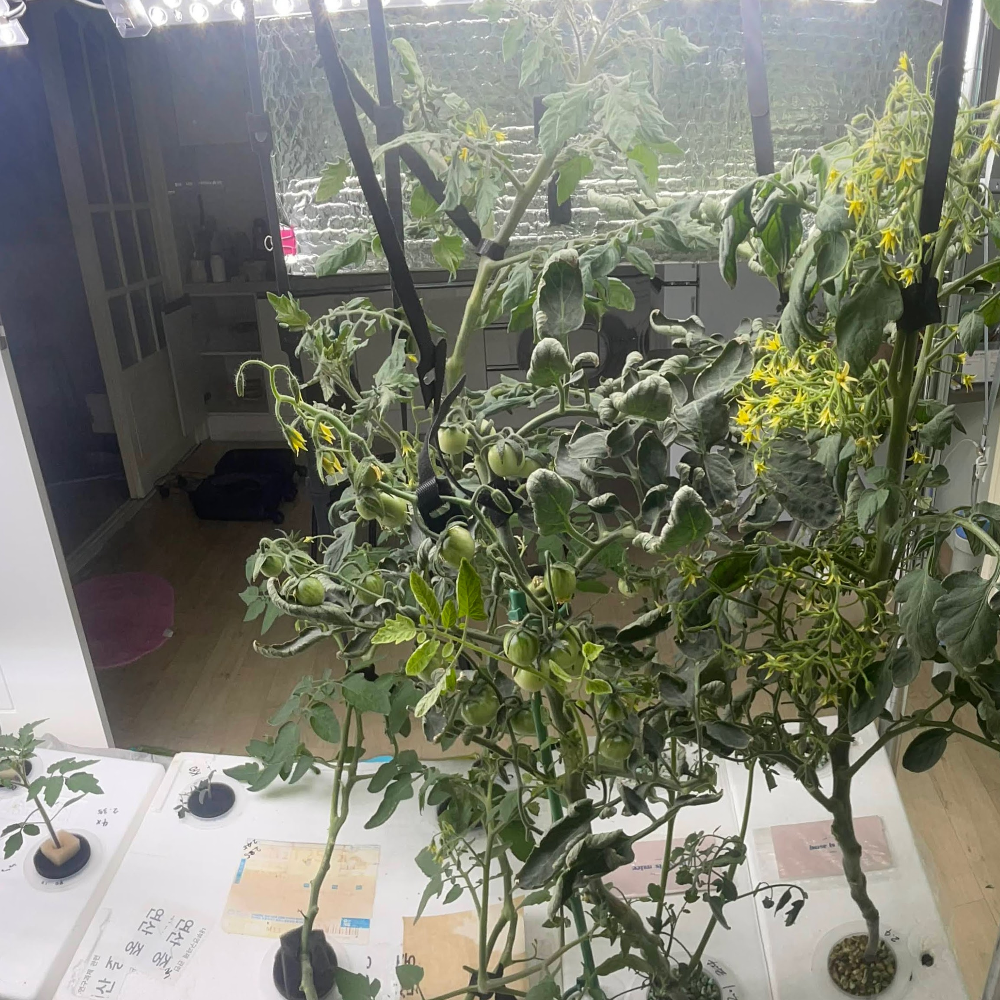

Caring
Plundered from
- 잎들깨 수경재배 요령 (Leaf Perilla Hydroponics Guidelines), 토마토 스마트팜 (Tomato Technique), 여름딸기 (Summer Strawberries): National Horticulture Institute of Korea
For most leafy greens, intense caring isn't required.
This varies for your plant. Pruning, harvesting, or even staking might be needed. Perilla requires regular harvesting and pruning for promoting yield. For basil, with regular harvesting, flower rods should be removed for harvest longevity.

Exception is a flowering; I heard that romaine, lettuce, perilla, celery flowers with a specific reason. Basil going to flower when they're enoughly tall. Harvesting flower rods was enough. I haven't seen flower rods for others. Refer to articles to take care of flowers.
This is different for entangling plants: all fruiting plants requires caring like a staking, pruning, leading per plant. Plant hormones like auxin and gibberllins might be needed.
Please refer to a trustworthy article for your plant. I suggest you to away from personal episodes and blog posts.

EC and its chemical may have to be altered. This could be hard for the Kratky method. Gradually give nutrient water with different EC or a chemical dilution like potassium for manipulation.
Most plants demands less nitrogen, more potassium and calcium with flowers. Crop milestones can be delayed if nitrogen is too much.
The same perspective applies for temperature. At least tomato and strawberry requires less than 30 celcius degree temperature for flowering, according to an official cultivar article from Korea agricultural division.

Temperature is the utmost importance for flowering and fruiting. In fact, this seems to be more imporatant than nitrogen-carbon ratio. We have seen of seasonal changes of plants.